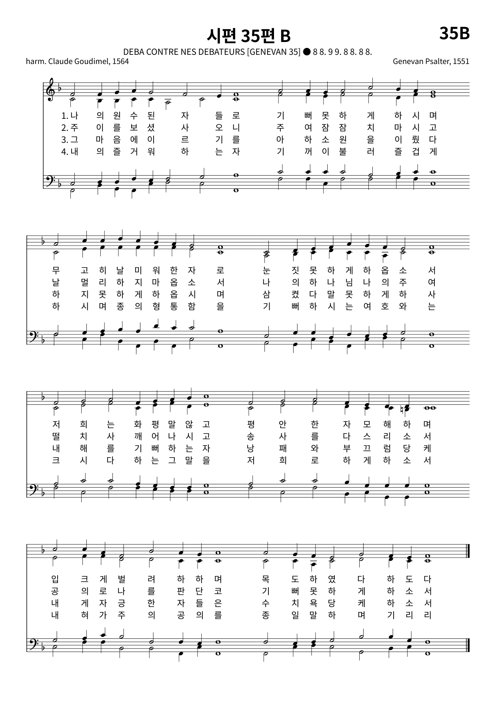

Psalm 35B
DEBA CONTRE NES DEBATEURS [GENEVAN 35] · 8 8. 9 9. 8 8. 8 8.
English title: Strive, LORD, with Those Who Strive with Me
Tune: Genevan Psalter, 1551 · Harmony: Claude Goudimel, 1564 · Lyrics: Korean adaptation of Psalm 35 from the Korean Revised Version (AI draft adaptation · not yet theologically reviewed) · 4 stanzas
Psalm 35 is divided into 2 tunes: A B · This tune contains stanzas 8–11 of the Psalm 35 lyrics.
Score PDF MusicXML (for printing) MusicXML (for accompaniment, with prelude and repeats) Read Psalm 35 (Korean Revised Version)
Score
← Psalm 35A ListAccompaniment (in preparation)Psalm 36 →
Lyrics (Korean)
Stanza 1
나의 원수된 자들로
기뻐 못하게 하시며
무고히 날 미워한 자로
눈짓 못하게 하옵소서
저희는 화평 말 않고
평안한 자 모해하며
입 크게 벌려 하하며
목도하였다 하도다
나의 원수된 자들로
기뻐 못하게 하시며
무고히 날 미워한 자로
눈짓 못하게 하옵소서
저희는 화평 말 않고
평안한 자 모해하며
입 크게 벌려 하하며
목도하였다 하도다
Stanza 2
주 이를 보셨사오니
주여 잠잠치 마시고
날 멀리하지 마옵소서
나의 하나님 나의 주여
떨치사 깨어나시고
송사를 다스리소서
공의로 나를 판단코
기뻐 못하게 하소서
주 이를 보셨사오니
주여 잠잠치 마시고
날 멀리하지 마옵소서
나의 하나님 나의 주여
떨치사 깨어나시고
송사를 다스리소서
공의로 나를 판단코
기뻐 못하게 하소서
Stanza 3
그 마음에 이르기를
아하 소원을 이뤘다
하지 못하게 하옵시며
삼켰다 말 못하게 하사
내 해를 기뻐하는 자
낭패와 부끄럼 당케
내게 자긍한 자들은
수치 욕 당케 하소서
그 마음에 이르기를
아하 소원을 이뤘다
하지 못하게 하옵시며
삼켰다 말 못하게 하사
내 해를 기뻐하는 자
낭패와 부끄럼 당케
내게 자긍한 자들은
수치 욕 당케 하소서
Stanza 4
내 의 즐거워하는 자
기꺼이 불러 즐겁게
하시며 종의 형통함을
기뻐하시는 여호와는
크시다 하는 그 말을
저희로 하게 하소서
내 혀가 주의 공의를
종일 말하며 기리리
내 의 즐거워하는 자
기꺼이 불러 즐겁게
하시며 종의 형통함을
기뻐하시는 여호와는
크시다 하는 그 말을
저희로 하게 하소서
내 혀가 주의 공의를
종일 말하며 기리리